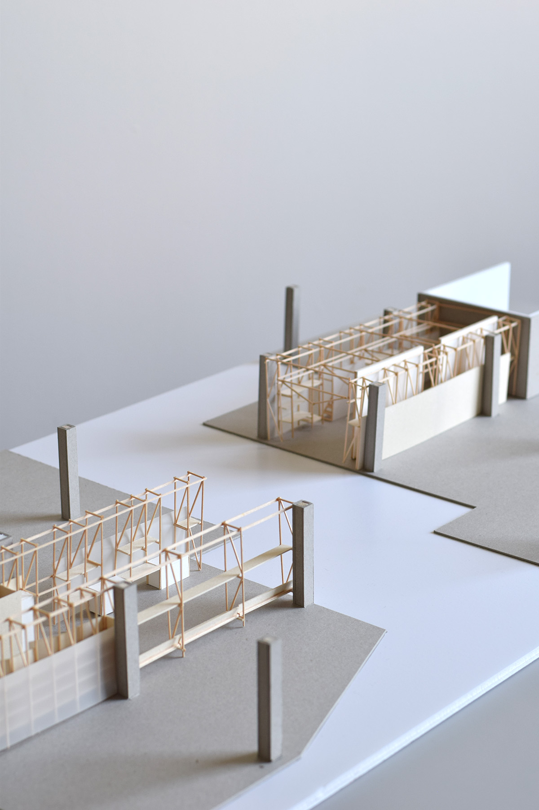

By mapping experiences of waiting and rest, this cartography shows the vulnerability of racialized bodies that are seen as a liability when not laboring.
Residue as Resistance
Advanced Studio "Extended Domesticity," Critics: Frida Escobedo, Karolina Czeczek
Spring 2022
In collaboration with Audrey Tseng Fischer
Our project seeks to validate the forms of domesticity and unproductive labor—such as food, care, and maintenance—that take place on construction sites. We aim to do so by choreographing a sequence of interventions at construction sites in The Hub, in San Francisco, centering care for bodies at work and rest as acts of resistance. These interventions have several phases corresponding with phases of construction; the ambition is that this seemingly temporary project has a permanent “residue”—remaining on the site and attracting a new public after construction is finished.

The project proposes a worker’s center using the language of scaffolding that can occupy and move across construction sites, taking advantage of adjacent site conditions to co-develop "neighborhood-serving businesses," a particular designation which inherently limits growth on the site.
Through various phases, the scaffolding used on site can extend to house places of repose for construction workers. These domestic zones strategically anticipate future plumbing walls in the future building.
The dining room uses the ceiling for hanging storage, with benches for eating and rest below.
The laundry room has spaces for folding clothes, line-drying in the ceiling, and spaces for rest.
Using the language of the Gantt chart, the project offers a choreography of the many construction sites in the area and the different residues they may be able to have based on their particular adjacencies.

A booklet of cross sections shows the potential use of scaffolding for different domestic layouts.